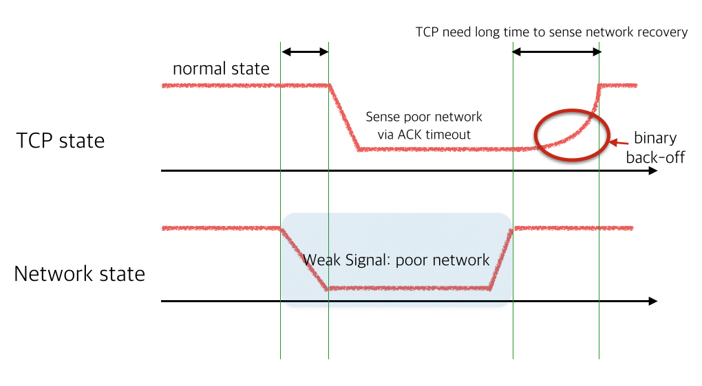

Introducing GoQuic - A quick way to use QUIC
Mobile Internet connections are getting faster every day. We've transitioned from very slow GSM networks to 3G and then to the fastest LTE networks. Despite this increased connection speed, we constantly struggle to stably load web pages. For instance, trying to browse the Internet while moving in a subway, the experience is constantly interrupted by signal blackouts to the point that it's so unbearable we simply stop doing it. It's not a throughput problem. It's about the stability of the connection. The problem is about dealing with highly variable network environments.
Fortunately, we can solve this problem right now: with "QUIC". Let's see how it compares.
Difficulty of Mobile Internet
At Devsisters, the server team constantly researches ways to improve our mobile game user's online experience. More and more, mobile games are becoming increasingly sophisticated. And many of the games released today require the Internet to enjoy. But unlike their PC game counterparts, mobile environments pose some unique challenges while hosting online mobile games.
Mobile phones are literally "mobile". So their online connectivity changes along with the mobile phone's changes in physical location. Constant transition from this wifi to that wifi, intermittent cellular data usage, occasional cellular signal blackouts--this all makes mobile Internet connections very unstable and unreliable.
This kind of environment poses serious user experience problems. Everybody with a smartphone would agree on how frustrating it is when their wifi signal weakens enough to transition to a cellular data network. It makes web browsing quite unbearable for a few seconds.
When a wifi signal is lost during a web browsing session, wifi is disconnected and transits to other available wifi or cellular data networks. And sometimes during that period, currently loading web pages may seemingly take ages to finish. In this situation, instead of just waiting, pressing the refresh button often makes the page load faster. Keen users may have observed this phenomena.
This kind of problem happens because of the way TCP handles packet loss. TCP views packet loss as a signal of network congestion. Under the condition of a "network blackout", it exponentially slows down sending packets to the point where no more packets are sent. When this kind of event occurs, even if the underlying network recovers, TCP connection requires more time to recover it's connectivity. So--from the user's perspective--it is more wise to simply press the refresh button in this situation instead of waiting for the loading to complete.

There are only two ways to handle this problem on HTTP: waiting indefinitely or 'timeout and retry'. This kind of problem also exists on HTTP/2 which also uses TCP. In fact, it's worse on HTTP/2 since it uses connection multiplexing network blackouts to stop all logical HTTP requests, causing significant performance degradation. This kind of problem is called head-of-line blocking.
Head-of-line blocking is not the only problem in HTTP. Since more and more services use HTTPS, it is becoming more expensive to initialize a connection. So it directly impacts the 'timeout and retry' strategy. In the mobile environment, where cellular latency of a 3G connection is in the 200~300ms range, the 3 round-trip HTTPS connection handshake is just too expensive.
Google's Experiment: QUIC
Fortunately, Google is trying to solve this problem by developing and researching a new protocol named QUIC. Since this problem is happening because of HTTP/TLS and TCP, we can't fix it on the TCP layer. So QUIC is directly developed upon the UDP transport layer.
QUIC aims to solve the head-of-line blocking issue and the TLS connection round-trip problem. A detailed project description is available in the QUIC project page.
Unfortunately, since QUIC is a experimental protocol, there's only one implementation of the protocol. And that implementation exists in project Chromium. Google provides toy server/client to play with. But the source code itself is not designed to be a library. It is heavily coupled to the existing Chromium sources.
Birth of libquic and goquic
Our initial plan was to incorporate Chromium's network runtime into our game client and server. But it turned out to be horribly hard. We then tried to extract minimal amounts of source code from Chromium to barely run QUIC code. That made the birth of project libquic: which is a bare necessities, stand-alone source code extracted from Chromium. It can build on Mac and Linux platforms and produce libquic library.
Our next step was to create a Golang binding. Since our server stack is developed in Go, it was a natural choice. This led to birth of goquic. It tries to mimic the built-in HTTP library and also incorporates bradfitz' http2 library to enable HTTP/2 when QUIC is unavailable.
Performance of goquic
Very primitive benchmark testing has been done. Testing environments below:
| Items | Description |
|---|---|
| Optimization | libquic built with -O3 parameters |
| CPU | Intel(R) Core(TM) i7-4930K CPU @ 3.40GHz |
| Server Code | https://github.com/devsisters/goquic/blob/master/example/server.go |
| Server Parms | GOMAXPROCS=12 ./server -port 9090 -n 12 |
| Client Code | https://github.com/devsisters/quicbench/blob/master/quicbench.go |
| Client Parms | ./quicbench -u="https://example.com:9090/" -c 200 -r 1000 |
The server code is modified to create 30B, 1kB, 5kB, 10kB HTTP body payload. Concurrency is 200 and each thread requests 1,000 requests. It is designed to measure ideal throughput of the server. Naturally the throughput goes down when concurrency increases.
Benchmark results:
| Payload Size | Requests per Second |
|---|---|
| 30B Payload | 12131.25 RPS |
| 1kB Payload | 11835.13 RPS |
| 5kB Payload | 7816.21 RPS |
| 10kB Payload | 5599.73 RPS |
On the 10kB case, calculating the total network throughput is 458Mbps.
How many connections per second can this server process?
./quicbench -u="https://example.com:9090/" -c 200 -r 100 -qk=false
Turning off keepalive using qk option results in a pure, new QUIC connection
per request. The benchmark results are 2905.58 CPS.
QUIC Proxy Server Docker Image
I used to create a QUIC reverse proxy of an existing site just for fun. So to enable people to experiment with QUIC, we've released a docker image that acts as a reverse proxy for the site of your choice. It enables QUIC along with HTTP/2, so you will enjoy the full bleeding edge of web browsing.
$ docker run \
-d --net="host"
-v /PATH/TO/CERT:/opt/configs/cert
-v /PATH/TO/CERT_PRIVATE_KEY:/opt/configs/key
--ulimit nofile=32768 devsisters/quic-reverse-proxy:releasemode
-cert=/opt/configs/cert
-key=/opt/configs/key
-addr=bind_ip
-port=443
-n=4
-loglevel=2
-- http://{BACKEND_HOST:PORT}
After that, you may try to connect the container with your Chrome browser. We recommend that you install Chrome HTTP/2 and SPDY indicator. Then you can see red lightning marks on the right side of the address bar when QUIC is enabled.
If you are using Google Chrome Stable Release (<= 51.0) as client, you should enable quic-host-whitelist command line flag to whitelist your domain. (See here). Most recent version of Google Chrome Canary doesn't require whitelisting, since It uses QUIC 32 (or higher) as default.
Have fun! :)